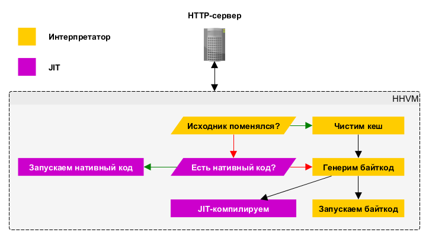

Ускоряем PHP
Бесплатно*. Без СМС
http://slides.rmcreative.ru/2015/hhvm-dump/История
Жил был Facebook
- Замечательно стартанул на обычном PHP.
- Рос и развивался.
2008
- Взрывной рост, 100 млн. пользователей, 154000 rps.
- С какого-то момента человекочасы стали дешевле железа.
А почему-бы не транслировать PHP в С++?
HipHop, 2010
Мультитредовый вебсервер + движок PHP
HPHPc + HPHPi + HPHPd
- HPHPc транслировал PHP в C++, который кормили GCC и получали бинарник для продакшна
- HPHPi - интерпретатор для разработки (отдельный!)
- HPHPd - интерактивный дебаггер
А можно лучше?
- HPHPc и HPHPi - отдельные
- На выходе был бинарник больше 1Гб!
- Упёрлись по возможности улучшения производительности HPHPc
- Упёрлись по возможности добавления в HPHPc динамики вроде eval и анонимок, несовместимость с PHP
Исследования
- 2010 - Пробы HHVM
- май 2012 - спонсирует два месяца разработки PHP под PyPy (success!)
- август 2012 - слухи о том, что HipHop будет переписан под JVM

HHVM, 2011
Заменил HPHPc и HPHPi в Facebook в 2013.
Что это такое?
- Виртуальная машина
- JIT-компилятор
- Кеш байткода
- FastCGI
- Приличная совместимость с PHP
- Расширения на C++, PHP, HNI
Как работает?
Как поставить?
sudo apt-key adv --recv-keys --keyserver hkp://keyserver.ubuntu.com:80 0x5a16e7281be7a449
echo deb http://dl.hhvm.com/debian wheezy main | sudo tee /etc/apt/sources.list.d/hhvm.list
sudo apt-get update
sudo apt-get install hhvm
Проверяем
hhvm --help
hhvm test.php
hhvm -m server
echo defined('HHVM_VERSION') ? 'Using HHVM' : 'Not using HHVM';FastCGI + nginx
server {
listen 80;
root /path/to/your/www/root/goes/here;
index index.php;
server_name hhvm.test.local;
location / {
try_files $uri $uri/ /index.php?$args;
}
location ~ \.php$ {
include fastcgi_params;
fastcgi_param SCRIPT_FILENAME $document_root/$fastcgi_script_name;
fastcgi_pass 127.0.0.1:9000;
try_files $uri =404;
}
}
Только Linux
- Под Windows не работает.
- Под MacOS только интерпретатор без JIT.
Производительность
Проверим на Yii2?
basic + запрос в базу + вывод в foreach
Вроде всё работает, но...
Exception приводит к WSOD
Версии
- HipHop VM 3.5.1 (rel)
- PHP 5.6.6-1~dotdeb.1 (cli) (built: Feb 20 2015 19:57:36) + OpCache
- Yii 2.0.3
- YII_DEBUG = false
- MySQL, sakila, выбор всех author
- Сессии на диске
- Файловый кэш
- hhvm.jit_profile_interp_requests = 0 (JIT без разогрева)
Тестим
siege -b -c10 -t60S http://hhvm.hhvm.local/
siege -b -c10 -t60S http://php.hhvm.local/
Для 1, 2, 3, 4, 5, 6, 10, 20, 50 конкурентных запросов.
Машина
- DigitalOcean
- 1 GB памяти
- 1 CPU
- 30 GB SSD
- Debian 7.0 x64
RPS
| Concurrency | PHP | HHVM |
|---|---|---|
| 1 | 26.65 | 36.84 |
| 2 | 32.48 | 35.22 |
| 3 | 32.68 | 36.69 |
| 4 | 35.54 | 38.70 |
| 5 | 34.57 | 38.04 |
| 6 | 34.05 | 38.56 |
| 10 | 35.01 | 38.89 |
| 20 | 32.88 | 37.18 |
| 50 | 33.81 | 37.35 |


40% -- 10%
Время ответа, ms
| Concurrency | PHP | HHVM |
|---|---|---|
| 1 | 40 | 30 |
| 2 | 60 | 60 |
| 3 | 90 | 80 |
| 4 | 110 | 100 |
| 5 | 140 | 130 |
| 6 | 180 | 160 |
| 10 | 280 | 260 |
| 20 | 610 | 540 |
| 50 | 1460 | 1320 |

15% -- 10%
Другие тесты
Бесплатно без SMS?!

Facebook работает на HHVM с начала 2013.
Wikipedia перешла за 6 месяцев
Но есть нюансы...Совместимость
- Покрыто много фреймворков
- Есть отклонения по части PHP (183 issue)
- Было больше, закрыли молча...
Из трекера
Можно, но осторожно
- Проект покрыт тестами
- Проект оттестирован на HHVM не в бою
Альтернативы
- KPHP (2013) - PHP → C++, несовместимое, без ООП, без доки
- Quercus - JVM, OpenSource (интерпретатор), Pro (JIT, PHP×3,5-4). Интеграция с Java, совместимость, UTF. Деплоится на Java-application сервера.
- Phalanger - PHP → .NET, JIT. Совместимость не полная.
- Подождать PHP 7 (phpng)
phpng
- В чём-то быстрее HHVM
- Zend, Дмитрий Стогов
- PHP 7, уже в master

Начал разрабатываться в 2013, релизнут в 2014.
- Динамическая и статическая типизация
- Generics (параметризация классов и методов, как в Java)
- Nullable-типы как в TypeScript:
int? - Коллекции
- Лямбды как в JavaScript
- shapes (типизированные структуры данных)
- Асинхронное выполнение кода (пока не до конца доделано)
- Куча других вкусностей
<?hh
class MyClass {
public function alpha(): int {
return 1;
}
public function beta(): string {
return 'hi test';
}
}
function f(MyClass $my_inst): int {
return $my_inst->alpha();
}
Как перейти?
<?phpменяем на<?hh- Profit?
Не совсем
Не поддерживаются:- goto, if...endif
- AND, OR, XOR
- @
- break N, continue N
- eval, $$x
- undefined переменные
- globals
- ArrayAccess
- Смесь HTML и Hack (привет, шаблоны)
- Конструкторы в стиле PHP4
- Вызов статического метода родителя
И ещё... всё надо обернуть в классы.
Опасно!
Есть h2tp, который конвертирует код обратно в PHP 5, но он не для этого.
Спасибо Facebook
- Спецификация PHP
- Приблизили PHP7
Бонус

- Получаем путь
which composer. - Прописываем алиасом в
.bashrc:
alias composer='hhvm /path/to/composer' - ×5 к скорости
Вопросы?